Photography is more than just a passion for me. Its a way to preserve the moments that shape our lives. My love for photography was born from a deep need to capture everyday experiences, sparked by the realization that I didnt have enough photos to remember loved ones who had passed away. Now, whether I am documenting the energy of city streets, the quiet beauty of architecture, the spirit of animals, or the essence of travel, my goal is to freeze time in a way that tells a story and keeps memories alive.
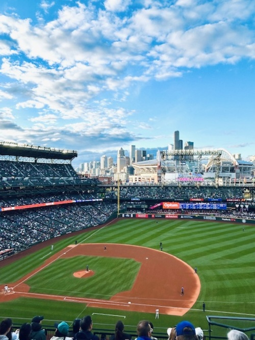
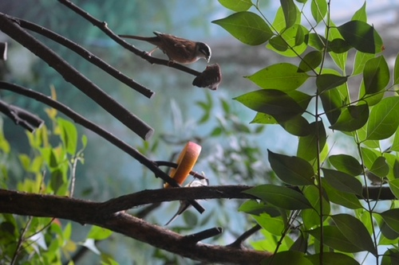
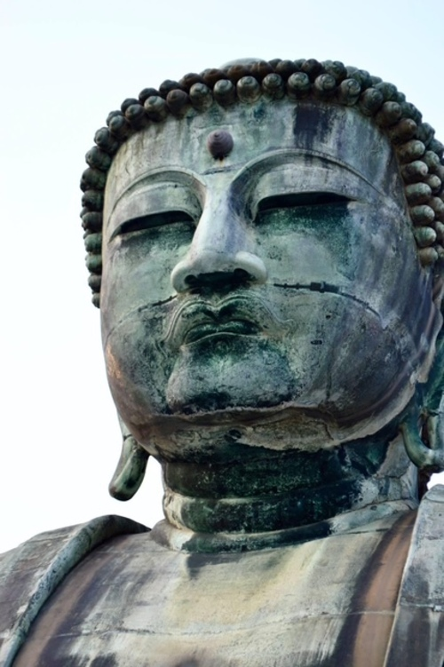
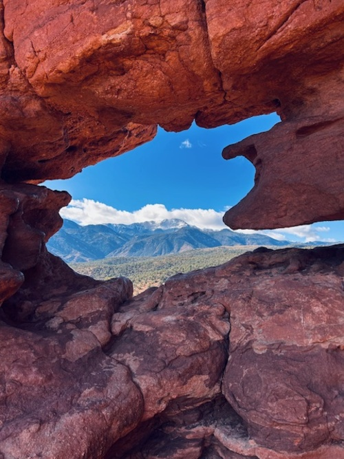
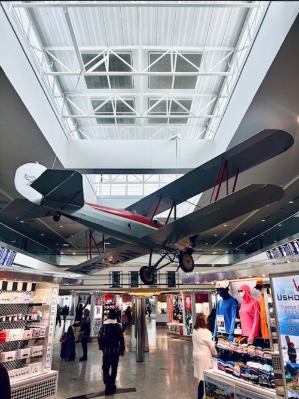
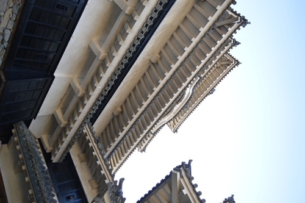
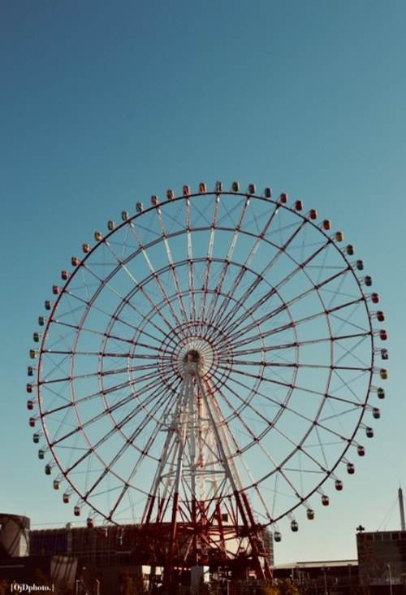
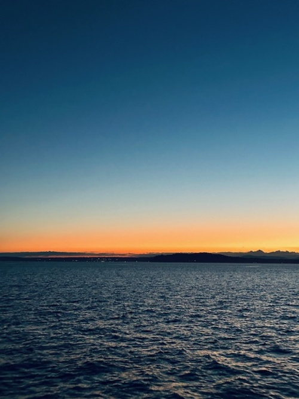
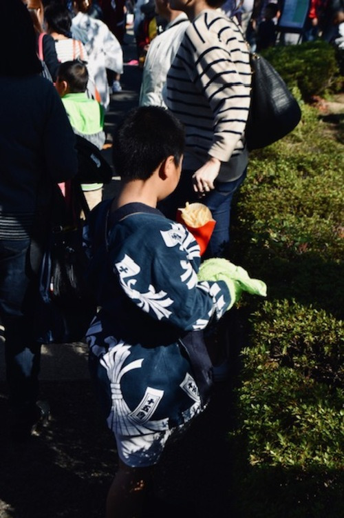
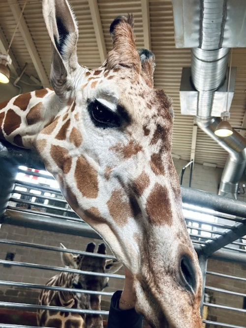
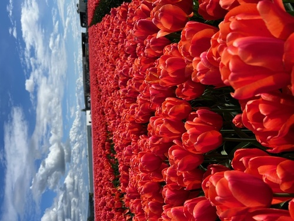
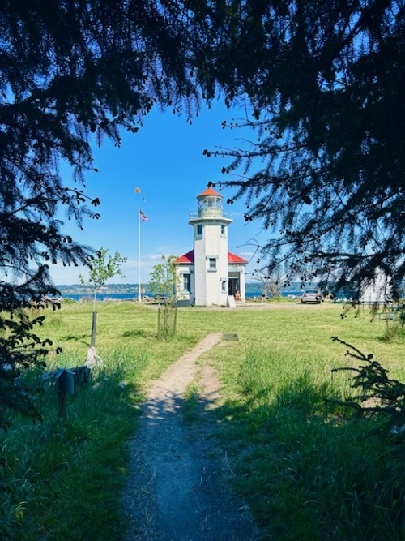
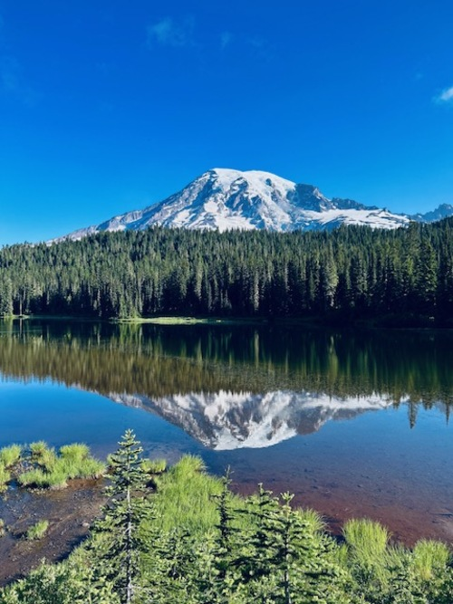
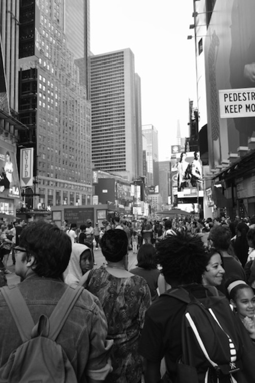
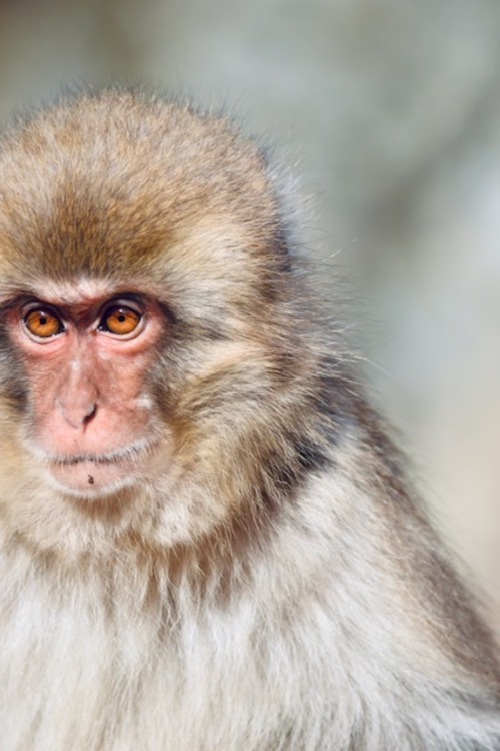